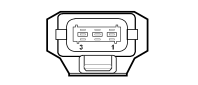
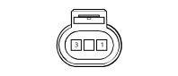

K047 Timing sensor(ENGINE)
- Path
- Electrical equipment > Connectors > K Sensors and sender units > K047 Cam angle sensor > K047 Timing sensor(ENGINE)
- Kind
- connector pinout (pin -> wire colour -> other end)
- Applies to
- all engines; all production periods
- Interactive page
- https://sloeber94.github.io/elrnDB-lThss/en/#/28006176
Applies to: engines: 2.0 TB; all production periods
Wiring | Colour |
|---|---|
50 ENGINE |
Applies to: engines: 2.4 20V; all production periods

Wiring | Colour |
|---|---|
50 ENGINE |
Applies to: engines: 2.4 JTD 10V; all production periods

Wiring | Colour |
|---|---|
50 ENGINE |
Applies to: engines: 3.2 V6; all production periods

Wiring | Colour |
|---|---|
50 ENGINE |
Pin | Cable | Destination | |||
|---|---|---|---|---|---|
Diameter | Colour | Node | Connector | Pin | |
Applies to: engines: 3.0 V6; all production periods
Wiring | Colour |
|---|---|
50 ENGINE |
Applies to: engines: 2.4 JTD 20V; all production periods

Wiring | Colour |
|---|---|
50 ENGINE |